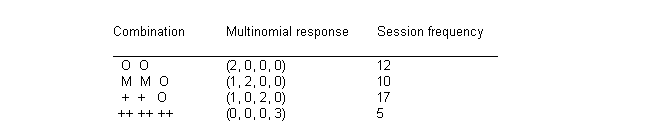
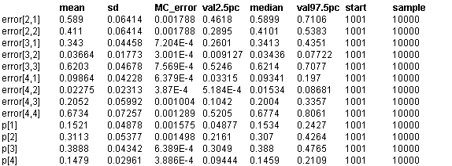

![[biopsies0]](biopsies0.bmp) Biopsies: discrete variable
Biopsies: discrete variable
latent class model
Spiegelhalter and Stovin (1983) presented data on repeated biopsies of transplanted hearts, in which a total of 414 biopsies had been taken at 157 sessions. Each biopsy was graded on evidence of rejection using a 4 category scale of none (O), minimal (M), mild (+) and moderate-severe (++). Part of the data is shown below.

The sampling procedure may not detect the area of maximum rejection, which is considered the true underlying state at the time of the session and denoted t
i
--- the underlying probability distribution of the four true states is denoted by the vector p. It is then assumed that each of the observed biopsies are conditionally independent given this truestate with the restriction that there are no`false positives': i.e. one cannot observe a biopsy worse than the true state. We then have the sampling model
b
i
~ Multinomial(e
t
i
, n
i
)
t
i
~ Categorical(p)
where b
i
denotes the multinomial response at session
i
where n
i
biopsies have been taken, and e
jk
is the probability that a true state t
i
= j generates a biopsy in state k.The no-false-positive restriction means that e
12
= e
13
= e
14
= e
23
= e
24
= e
34
= 0. Spiegelhalter and Stovin (1983) estimated the parameters e
j
and p using the EM algorithm, with some smoothing to avoid zero estimates.
The appropriate graph is shown below, where the role of the true state t
i
is simply to pick the appropriate row from the 4 x 4 error matrix e. Here the probability vectors e
j
(j = 1,...,4) and p are assumed to have uniform priors on the unit simplex, which correspond to Dirichlet priors with all parameters being 1.
The BUGS code for this model is given below. No initial values are provided for the latent states, since the forward sampling procedure will find a configuration of starting values that is compatible with the expressed constraints. We also note the apparent ``cycle'' in the graph created by the expression nbiops[i] <- sum(biopsies[i,]). This will lead Such ``cycles'' are permitted provided that they are only data transformation statements, since this does not affect the essential probability model.
model
{
for (i in 1 : ns){
nbiops[i] <- sum(biopsies[i, ])
true[i] ~ dcat(p[])
biopsies[i, 1 : 4] ~ dmulti(error[true[i], ], nbiops[i])
}
error[2,1 : 2] ~ ddirich(prior[1 : 2])
error[3,1 : 3] ~ ddirich(prior[1 : 3])
error[4,1 : 4] ~ ddirich(prior[1 : 4])
p[1 : 4] ~ ddirich(prior[]); # prior for p
}
Data
( click to open )
Inits for chain 1
Inits for chain 2
( click to open )
Results
A 1000 update burn in followed by a further 10000 updates gave the parameter estimates
